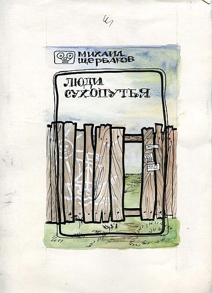
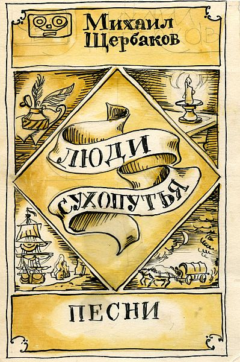

|  |
|
Рассказывает Михаил НИКОЛАЕВИЧ Щербаков: "Я участник (довольно пассивный член с 1978 года) Калужского КСП, созданного Пашей Намом в 1977 году. В начале 80-х у нас стал иногда появляться и Михаил КОНСТАНТИНОВИЧ Щербаков. Тогда мы были молоды, и по отчеству нас называли лишь для того, чтобы различать. Всем представлялось забавным существование в нашем клубе двух М.Щербаковых... То ли Паша Нам, то ли Лёша Уклеин, продолжая серию книжек вслед за "Есть магнитофон системы Яуза", попросили меня подготовить концепцию обложки. Обязательным условием было стилизованное изображение катушечного магнитофона в верхнем левом углу обложки - эмблема серии..." |
|  |